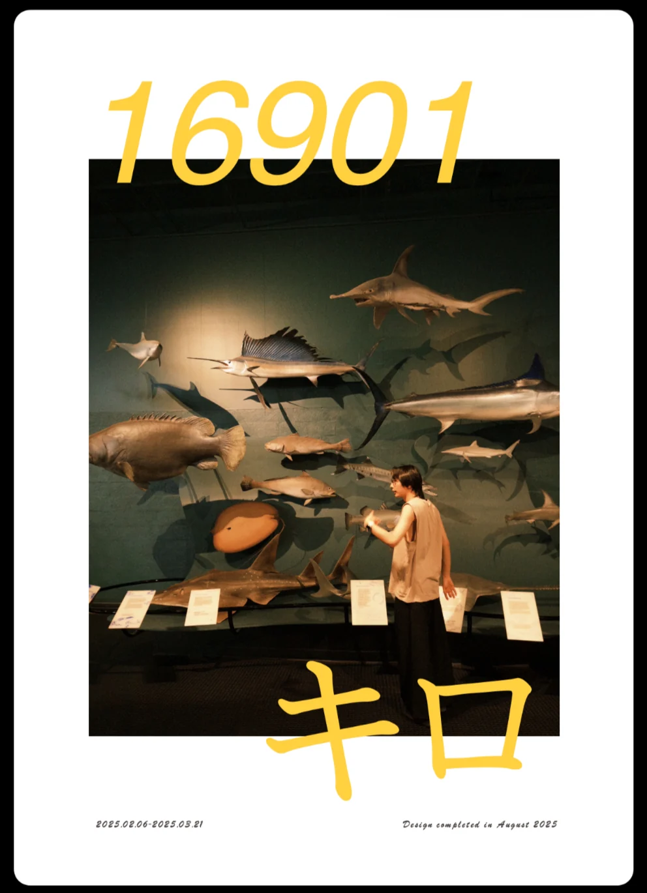

A JOURNEY, BOUND IN PAGES.负责企划、导演、拍摄、剪辑与设计。
45天在路上的时间
16,901km沿途累积的距离
6人累计参与旅程
2人完成全部行程
01 / THE BEGINNING从一句玩笑，
从一句玩笑，
到一本自己的书。
「要不哪天租辆房车，把澳大利亚绕一圈？」
这趟旅行，最初只是朋友间的一句话。后来，真的取了车、上了路，开过荒野，也经过海边的城市。
开始写记录时，我正在整理视频素材、准备剪辑。原本只是想给旁白搭一个脚本，结果越写越多，写到一万多字，便有了把它整理成书的念头。
于是，那些风景、同伴、对话，还有当时的心情，一起留在了纸上。
02 / ON THE ROAD
路上的四十五天。
2025年2月6日至3月21日，一次澳大利亚环岛旅行。路线之外，这本书也记录了同伴的更替、情绪的起伏，以及那些计划之外的瞬间。
06 FEB 202521 MAR 2025
ONE LAP / MANY STORIES
一圈澳大利亚。
16,901 KM
依据原书重绘的路线示意，非道路导航轨迹。
BETWEEN THE FRAMES
纸页之外，旅途之中。
一些来自旅途影像的画面。车窗、海风、同伴，以及天色慢慢变暗的时刻。
ON THE ROAD
风景之间，是一起度过的日常。
04 / SELECTED PAGES
翻开，进入旅程。
选读《16901公里》中的照片、文字与版式。
从一次出发，到把记忆留下。
停下来的时候，也在旅行。
把眼前的风景，变成纸上的颜色。
疲惫、意外，和继续向前。
风景之外，还有一起经过的人。
05 / MAKING THE BOOK把经历，
把经历，
整理成能被阅读的作品。
从构思、记录到成书，主要由我承担写作、摄影、编辑、设计、排版与翻译。
- 01
在路上记录
用照片、视频和文字，保存经过的地方与当时的感受。
- 02
从旁白到文字
整理影像时开始写作，让原本用于旁白的脚本逐渐长成旅行随笔。
- 03
把文字与照片放在一起
通过编辑、版式与翻译，把零散的记录组织成一本可以反复翻阅的书。
构思 / 写作 / 摄影 / 编辑 / 设计 / 排版 / 翻译
把旅途，留在纸上。
如果有一天，翻开这些照片和文字，能够记起那一年、那些人、那些日子，那么这份记录就有了意义。